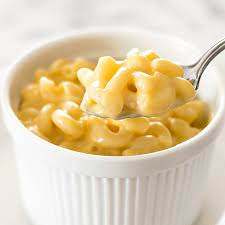

The Odin Mac and Cheese Recipe

Description
This starter guide for the Odin's mac and cheese recipe will have you being the favorite of any family cookout or dinner party as its super simple but also very customizable to suit any craving! Using a mix of sharply flavored cheese with good melting cheeses to give a nice and velvetty texture that you can not only top on pasta but also turn into a base for amazing homemade queso, use as a topping or filling for other dishes, or just eat straight out of the pot!
Ingredients
- 1/4 cup half-stick of butter
- 1/4 cup of all purpose flour
- 1 cup of whole milk
- 1 cup of a good melting cheese (American (not Kraft singles!!), soft cheddar, Fontina, Guyrerre are some examples)
- 1 cup of whatever other desired cheese (some of my favorites are parmasean, mozzarella, and/or a sharp white cheddar)
- 1 cup of desired pasta, preferablly something that will fill or cling with the sauce (examples being macaroni or penne)
- Kosher salt and pepper to season-to-taste at the end
Steps
- start by melting butter in a medium sauce pan over medium heat
- Add equal parts all purpose flour and combine with a whisk, cook for ~5 minutes
- Slowly add milk while whisking together with the flour and butter mixture, thicken until the mix loosely covers the back of the spoon
- Add selected cheeses while also whisking togther, watching your heat here is important, fi too hot you could split the cheese giving an almost grainy texture
- Let the cheese mixture thicken over medium-low heat stirring constantly unitl it coats the back of a spoon nicely
- Add salt and pepper to desired taste
- Cook pasta to al dente and top pasta with the cheese sauce, you can use some of the pasta water to loosen the sauce a bit if the mix comes out too thick for your taste
- Garnish with fresh pepper and herb of choice if desired, also feel free to top with browned breadcrumbs, protein and/or veggie of choice to put your own twist on the recipe!